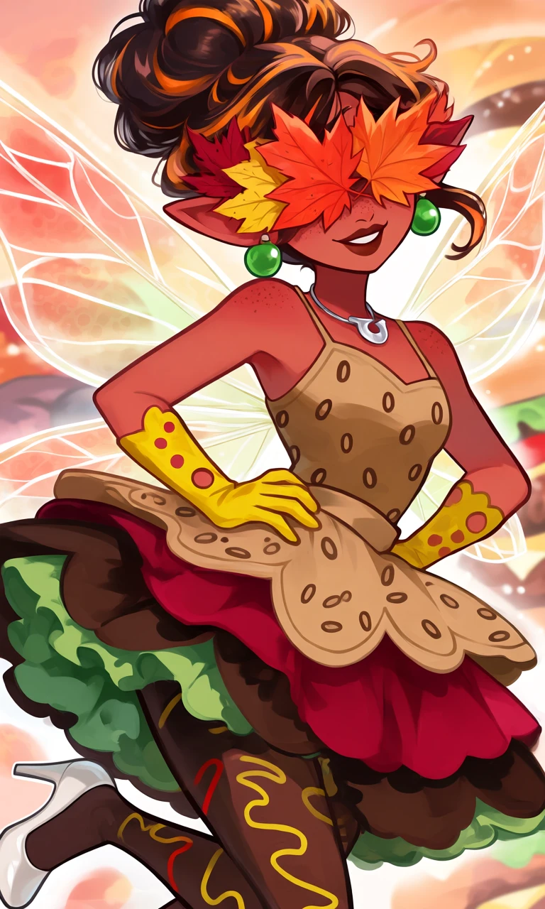
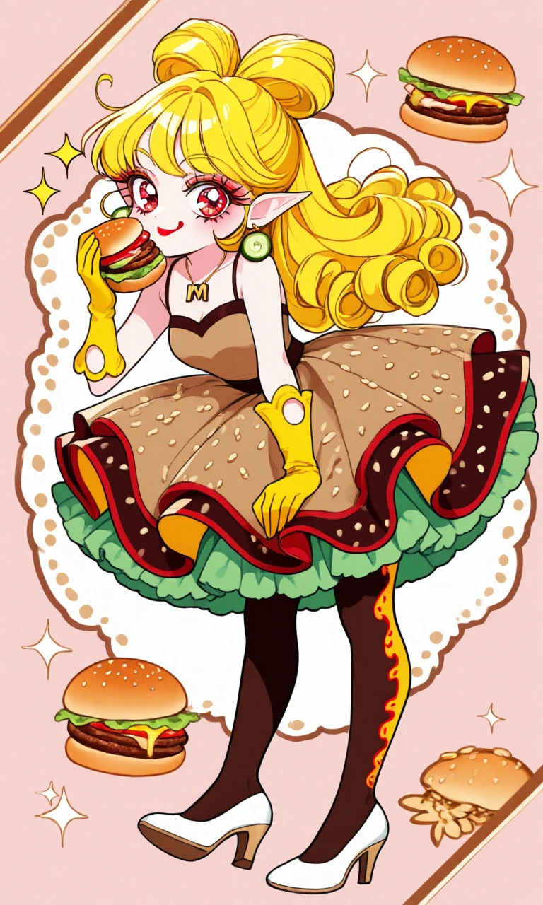

The Burger Deluxe

Outfit Prompt
tan brown skirt, sesame seeds pattern on skirt, green frill underskirt, multi layered skirt, red under skirt, dark brown under skirt, scalloped hem skirt, dark brown tights with yellow and red squiggly line pattern, tan brown spaghetti strap top, sesame seeds pattern on top, yellow gloves with circle holes pattern, white heels, pickle earrings, m shape charm necklace,
Outfit Examples



